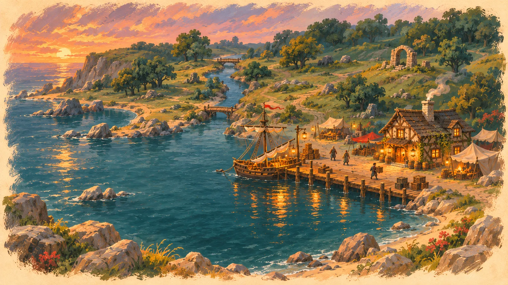

⚓ Port Haven
Een mini dorpje aan de enige veilige baai van de kust, gevestigd tussen ruïnes. Het eerste stuk is de kade: daar leggen de schepen met nieuwe avonturiers aan. Voorlopig staan er alleen De Volle Pul en wat tenten. Wat jullie buiten ontdekken en veilig maken, laat het dorp groeien.
Hier vind je: De Volle Pul